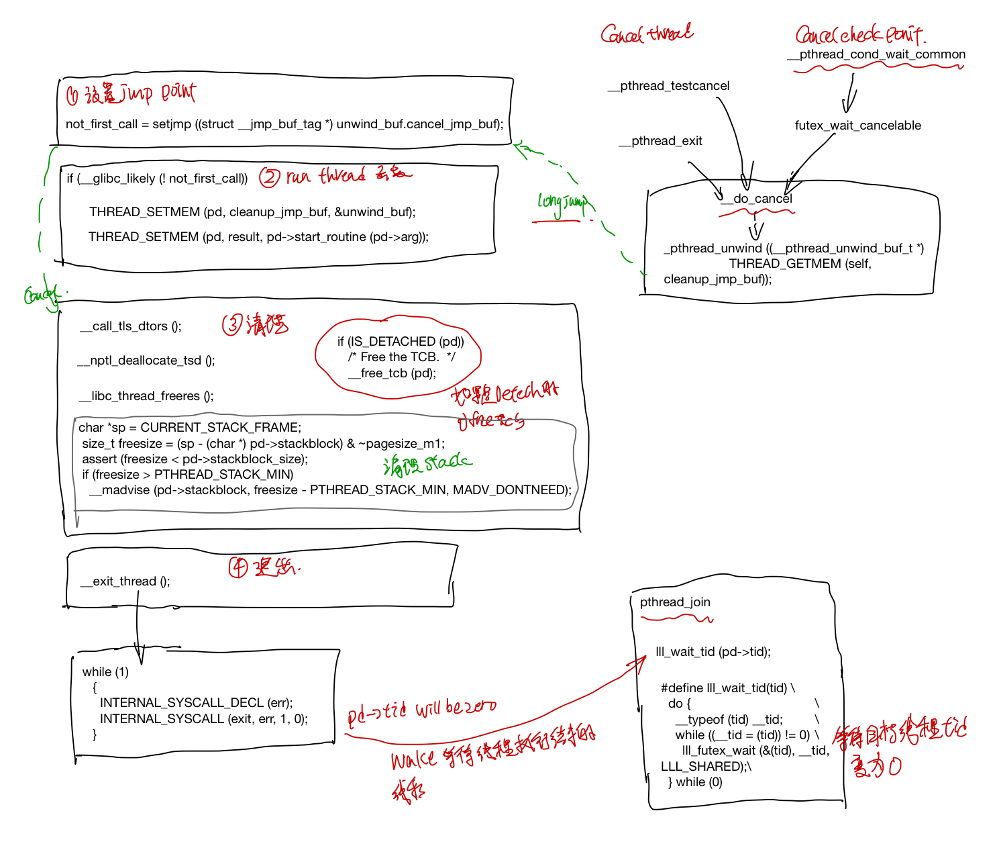

Glibc的pthread实现代码研读 1: 线程的生命周期
本文主要包含pthread线程在linux上的创建，执行，exit, detach, join, cancel, thread local storage。
pthread_t
struct pthread定义在nptl/descr.h中, 这边抽几组主要的field来说明下(这里为了方便描述，对field在struct的顺序做了重新的编排)。
首先是创建完线程之后，系统给的id和各种flag attribute.
/* Flags. Including those copied from the thread attribute. */
int flags;
pid_t tid;
/* Lock to synchronize access to the descriptor. */
int lock;
然后最显而易见的是, 线程要执行的函数指针，函数参数以及函数执行的结果, 这几个字段会在线程的入口start_thread中用到。对于result字段: pthread_join(t1, &status), 这个会等待线程t1执行结束，然后把结果放到status中。
//保存线程返回结果
void *result;
// 线程执行的函数和参数
void *(*start_routine) (void *);
void *arg;
然后一些field用于处理下面这几种异常情况: 线程如果抛异常了，线程调用pthread_exit提前exit了，线程被其它线程pthread_cancel了。
// 线程cancel的状态
int cancelhandling;
// 线程被cancel的时候，处理cleanup callback和cleanup jmp
struct _pthread_cleanup_buffer* cleanup;
struct pthread_unwind_buf* cleanup_jmp_buf;
/* Machine-specific unwind info. */
struct _Unwind_Exception exc;
标明线程是被join的还是已经deteched字段, 这个字段涉及到线程的pthread struct该什么时候释放。
struct pthread* joinid;
#define IS_DETACHED(pd) ((pd)->joinid == (pd))
stack相关的field, 在ALLOCATE_STACK和回收statck的时候会用到，由于pthread的这个struct也是放在stack上的，因此需要一些参数记录pthread的offset, user_statck表示是否是由用户提供的stack。
/* True if the user provided the stack. */
bool user_stack;
void *stackblock;
size_t stackblock_size;
/* Size of the included guard area. */
size_t guardsize;
/* This is what the user specified and what we will report. */
size_t reported_guardsize;
thread specific data相关的字段
// 用于thread specific data, thread local storage
struct pthread_key_data
{
uintptr_t seq;
void* data;
} specific_1stblock[PTHREAD_KEY_2NDLEVEL_SIZE];
struct pthread_key_data* specific[PTHREAD_KEY_1STLEVEL_SIZE];
最后调度策略和调度参数相关的字段，在线程create的时候，会调用sched_setaffinity， sched_setscheduler让系统设置这些参数。
// 调度策略和调度参数
struct sched_param schedparam;
int schedpolicy;
pthread struct 的alloc和free
nptl/allocatestatck.c 中的allocate_stack和__deallocate_stack负责alloc和free pd struct。如果用的是系统分配的stack话， pthread有个stack list，当alloc的时候，从这个stack list中取出一个，然后在free的时候，把这个stack放回到stack list中。
这就导致了一个问题, pthread_t 并不适合作为线程的标识符，比如下面两个线程的pthread_t的地址是一样的(参考自Linux 多线程服务端编程: 4.3节):
int main() {
pthread_t t1, t2;
pthread_create(&t1, NULL, threadFunc, NULL);
printf("%lx\n", t1);
pthread_join(t1, NULL);
pthread_create(&t2, NULL, threadFunc, NULL);
printf("%lx\n", t2);
pthread_join(t2, NULL);
}
pthread_create
pthread create 首先分配线程的栈，并在这个栈上划出一片内存给pthread struct, 然后调syscall clone(2) 创建一个线程，创建的新的线程会从START_THREAD_DEFF 这个入口开始执行起来，最后线程的执行结果保存在pd->result里面， 用户可以通过pthread_attr_setstack来指定线程stack的内存，也可以直接使用系统的内存。
ALLOCATE_STACK(iattr, &pd)
create_thread 调用linux系统接口clone创建线程, 如果线程要指定在某个CPU上跑的话，调用sched_setaffinity设置好cpuset, 最后何止好调度策略和调度参数。
ARCH_CLONE(&start_thread, STACK_VARIABLES_ARGS, clone_flags, pd, &pd->tid, tp, &pd->tid)
INTERNAL_SYSCALL(sched_setaffinity, err, 3, pd->tid, attr->cpusetsize, attr->cpuset)
INTERNAL_SYSCALL(sched_setscheduler, err, 3, pd->tid, pd->schedpolicy, &pd->schedparam)
其中clone 的flags如下：
const int clone_flags = (CLONE_VM | CLONE_FS | CLONE_FILES | CLONE_SYSVSEM
| CLONE_SIGHAND | CLONE_THREAD
| CLONE_SETTLS | CLONE_PARENT_SETTID
| CLONE_CHILD_CLEARTID
| 0);
CLONE_THREAD, 标明是创建一个线程，和创建者同一个group, 同一个parent。
STACK_VARIABLES_ARGS对应着上一步ALLOCATE_STACK分配好的内存地址, 这块内存会作为新的线程的stack来用。
clone中的的start_thread就是线程的entry_point, 这个函数定义在nptl/pthread_create.c里面 START_THREAD_DEFF, 这个函数就是新创建的线程的入口。
start thread
start thread是线程的入口， 在跑用户函数之前，会设置一个jmp point, 之后等线程执行结束的时候(调用pthread_exit, 或者线程被cancel掉的时候)，会longjump 回到这个函数, 接着做线程执行完的清理工作。
如果线程是Deteched， 那么线程的pd结构就会被释放掉(因为pthread返回的status指针是保存在pd->result这个里面的)，否则就要等pthread_join完之后释放掉。
最后线程exit_thread之后，会把pd中的tid设置为0，这样就可以唤醒等待join该线程结束的线程。
- 设置好unwind buffer, do cancel的时候可以跳回来
int not_first_call;
not_first_call = setjmp ((struct __jmp_buf_tag* ) unwind_buf.cancel_jmp_buf);
if (__glibc_likely (! not_first_call))
{
THREAD_SETMEM (pd, cleanup_jmp_buf, &unwind_buf);
setjmp和longjmp是非局部跳转函数, 它可以在在栈上跳过若干调用帧，返回到当前函数调用路径上的某一个函数中, 若直接调用则返回0，若从longjmp调用返回则返回非0值的longjmp中的val值。之后的do_cancel可能会longjmp到这个地方。
- 调用用户提供的函数, 结果存在
pd->result中
#ifdef CALL_THREAD_FCT
THREAD_SETMEM (pd, result, CALL_THREAD_FCT (pd));
#else
THREAD_SETMEM (pd, result, pd->start_routine (pd->arg));
#endif
- 做一些清理工作，清理TLS, 标记stack为可复用状态，如果线程是detached, 则释放pd struct的内存, 否则要在pthread_join里面释放这个pb struct, 如果一个线程既不是deteched，也没有线程在pthread_join等待他，这个pb struct就不会被释放，进入一个类似于zombile的状态。
__call_tls_dtors ();
/* Run the destructor for the thread-local data. */
__nptl_deallocate_tsd ();
/* Clean up any state libc stored in thread-local variables. */
__libc_thread_freeres ();
if (IS_DETACHED (pd))
__free_tcb (pd);
// mark stack resuable
char *sp = CURRENT_STACK_FRAME;
size_t freesize = (sp - (char *) pd->stackblock) & ~pagesize_m1;
assert (freesize < pd->stackblock_size);
if (freesize > PTHREAD_STACK_MIN)
__madvise (pd->stackblock, freesize - PTHREAD_STACK_MIN, MADV_DONTNEED);
// other code
__exit_thread ();
pthread_exit
猜测pthread_exit 的do_cancel的unwind会调用pthread_cleanup_push中注册的cleaup函数，最后会longjmp回到start_thread里面的setjmp那块，继续执行线程结束后的清理工作。
__pthread_exit (void* value)
{
THREAD_SETMEM (THREAD_SELF, result, value);
__do_cancel ();
}
do_cancel定义如下:
__do_cancel (void)
{
struct pthread* self = THREAD_SELF;
THREAD_ATOMIC_BIT_SET (self, cancelhandling, EXITING_BIT);
__pthread_unwind ((__ pthread_unwind_buf_t*)
THREAD_GETMEM (self, cleanup_jmp_buf));
}
pthread_join
pthread_join(t1, &result) 线程会调用lll_wait_tid等到t1执行结束，然后从t1的pd->result获取线程返回的结果, 返回给status，最后释放线程t1对应的pd sturct.
- 检查是否有死锁, 避免等待自己，以及正在被cancel的线程，
if ((pd == self
|| (self->joinid == pd
&& (pd->cancelhandling
& (CANCELING_BITMASK | CANCELED_BITMASK | EXITING_BITMASK
| TERMINATED_BITMASK)) == 0))
&& !CANCEL_ENABLED_AND_CANCELED (self->cancelhandling))
result = EDEADLK;
- 设置
t1->joinid = self;
/* Wait for the thread to finish. If it is already locked something
is wrong. There can only be one waiter. */
else if (__builtin_expect (atomic_compare_and_exchange_bool_acq (&pd->joinid,
self,
NULL), 0))
/* There is already somebody waiting for the thread. */
result = EINVAL;
- 等待t1线程执行结束, 这里的lll_wait_tid 最后会去调用linux提供的futex, 会被挂起来，一直等到t1的tid变为0。
/* Wait for the child. */
lll_wait_tid (pd->tid);
- free t1线程的pd struct
pd->tid = -1;
/* Store the return value if the caller is interested. */
if (thread_return != NULL)
*thread_return = pd->result;
/* Free the TCB. */
__free_tcb (pd);
pthread_detach
标记线程为detached, 把pd的jionid改为自己。
int result = 0;
/* Mark the thread as detached. */
if (atomic_compare_and_exchange_bool_acq (&pd->joinid, pd, NULL))
{
if (IS_DETACHED (pd))
result = EINVAL;
}
else if ((pd->cancelhandling & EXITING_BITMASK) != 0)
__free_tcb (pd);
return result;
pthread_cancel
pthread_cancel 只是把pd->cancelhandling的状态记为CANCLEING_BITMASK|CANCELED_BITMASK。
do{
oldval = pd->cancelhandling;
newval = oldval | CANCELING_BITMASK | CANCELED_BITMASK;
//other code
} while (atomic_compare_and_exchange_bool_acq (&pd->cancelhandling, newval,
oldval);
然后在pthread_testcancel的时候，才真正的调用do_cancel去cancel thread.
//pthread_testcancel --> CANCELLATION_P
if (CANCEL_ENABLED_AND_CANCELED (cancelhandling)) \
{ \
THREAD_SETMEM (self, result, PTHREAD_CANCELED); \
__do_cancel (); \
}
或者一些会check cancel point的调用比如pthread_cond_wait里面，会去检查这个标记，
pthread_cond_wait -->futex_wait_cancelable --> pthread_enable_asynccancel --> __do_cancel
futex_reltimed_wait_cancelable --> pthread_enable_asynccancel --> __do_cancel
sem_wait_common -> futex_abstimed_wait_cancelable --> pthread_enable_asynccancel --> __do_cancel